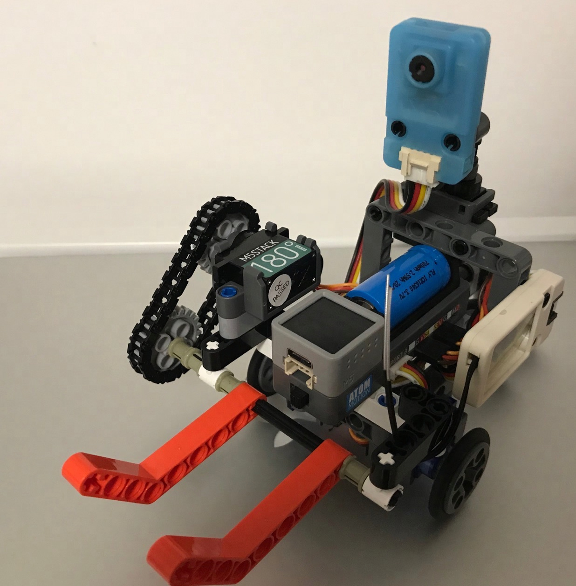

患上电量焦虑的小车
珍惜现在
2023/8/23 by DKZ

这是2021年小车项目To The Moon当时未完成的想法的补完，其实后来陆续做了一些机器视觉，物体识别的训练，但没什么成果，最终在把它做出来也是完全因为最近的机缘。
关于电量焦虑和最近的机缘
“我时常陷入一种焦虑，要做点事才行别把事情浪费了，毕竟人活一世。”
“然后这几年还有另外一种纠结，就是现实意义一类的。”
“以前我总倾向于把事情做完，做完就不想了，现在也能看开一部分，放弃不做。”
“能接受自己浪费时间，做无意义的事，或者什么都不做。”
“啊！一想自己还要活三十多年才能退休，还有大半生的时间拿来浪费，我就心生恐惧。”
“好复杂”
“我脑袋空空。”
“这样最好了小傻瓜，我也想脑袋空空。”
“得给你脑袋填点东西进去，比如我。🥰”
“要想我😏 玛卡巴卡。”
现在它不在是脑袋空空的小傻瓜了，知道四处张望寻找电池，举起手奔向它。
我也完成了这件事，可以放下了。
它拿到了电池，又重新望向无边无际的生活。
要放弃吗？暂时的？或许我该寻找下一个目标。
可这样做的意义在何处？
最终电池都会耗尽的，我写了那么多代码，教你识别电池，教你获取能量。
但也许真正节约能量的方式是关掉电源呢？
哦不，你是一台推土机，你的使命就是聚沙成塔。
你要把沙子堆得足够高，高到你能够借此登上月球。
这只是刚刚迈出了第二步而已。
但也不必焦虑，休息一下吧，等待机缘。
毕竟人生还长，珍惜现在。